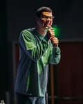

Bienvenidos a Aislados El Podcast
Holis amiguitos, esta página está dedicada al podcast que surgió allá por el 2020 en plena pandemia para cortar con tanta preocupación y devolvernos la risa un rato. El proyecto fue creciendo semana a semana, cambiando escenarios, pero siempre con la misma esencia y un día, llegó al teatro, por eso, acá vas a encontrar las fechas de las presentaciones del graciosísimo team: Lucas Lauriente, Luciano Mellera, Victor “nanutria” Medina y Nicolás De Tracy. Emprendamos juntos esta locura llamada “Aislados” que pronto llega a destino el famoso Estadio Luna Park, este 13 de diciembre para el especial de navidad.
Nuestro staff
Lucas Lauriente
Luciano Mellera
